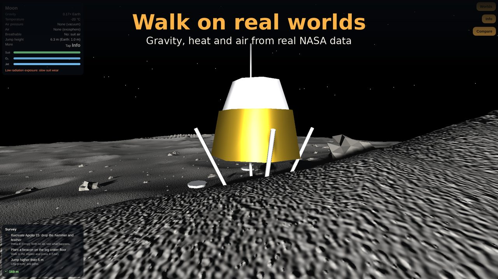
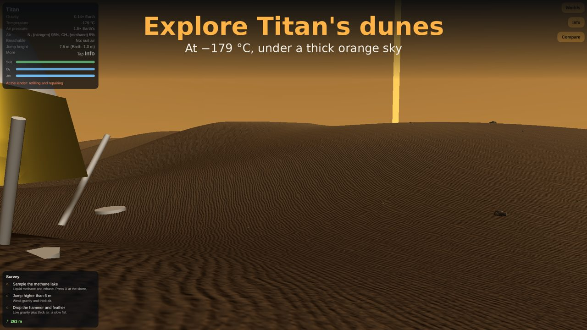
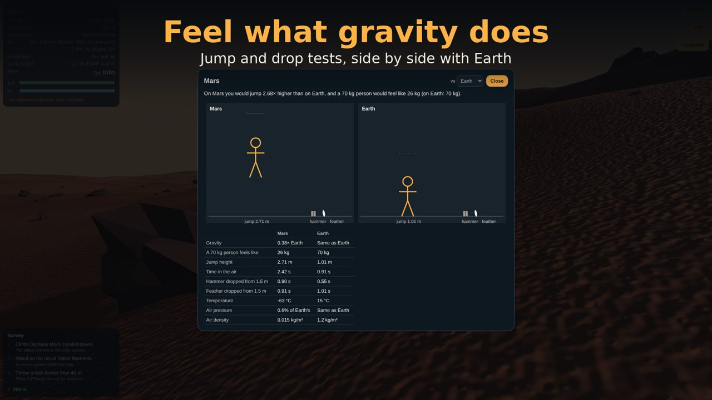
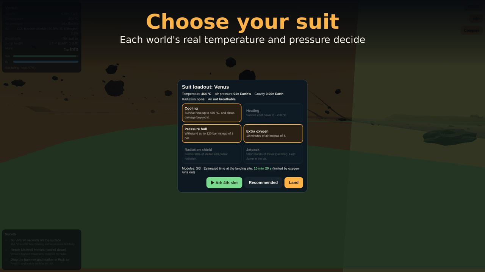

Real physics
Jump six times higher on the Moon. Feel Venus crush your suit in seconds. Drop a hammer and a feather and watch the air decide.
3,930 worlds
Every confirmed exoplanet small enough to stand on, built from the NASA Exoplanet Archive, plus 6 Solar System worlds with real NASA maps.
Survive the trip
Pick 3 of 6 suit modules, complete 3 surveys and make it back to your lander before the oxygen runs out.
See it




Start with these
Honest about what we know
Every value in the game is labelled measured, estimated or imagined. Sizes, masses and temperatures come from real observations. No one has seen the surface of an exoplanet, so the ground and sky you walk under are an informed guess built from those numbers.
Explorer Pass
Worldwalk is free. The Solar System and 42 featured exoplanets unlock as you play. The optional one-time Explorer Pass opens the full catalog and removes ad breaks.